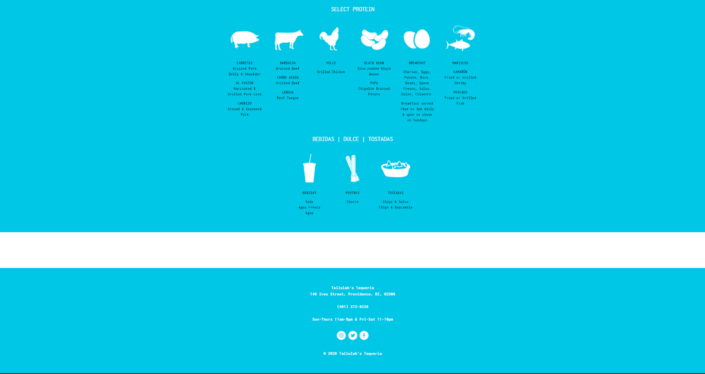
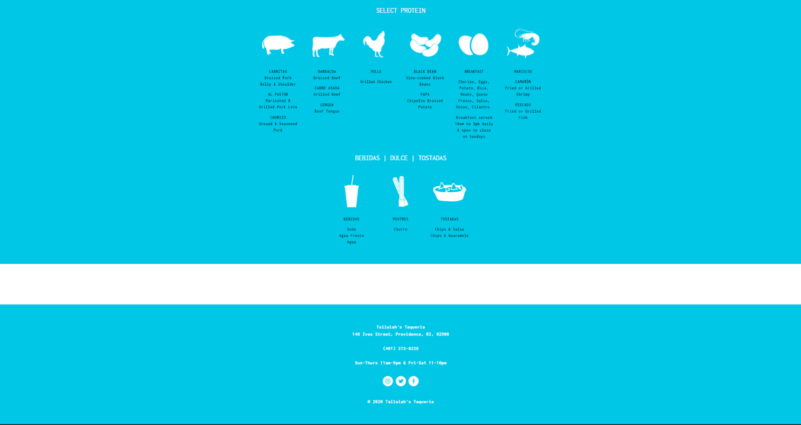

Responsive Site Redesign
 



Interface Issues
- The navigation bar at the top of the screen is hard to read because of lack of contrast between text and the image
- The navigation bar is also redundant with both the logo and the “bienvenidos” link taking the user to the same page
- It is also unclear what “bienvenidos” is supposed to do if you click on it
- The menu is unclear and hard to read/understand
- The images for the menu are nice, but don’t resize well on different sized screens
- There is a strange gap at the bottom of the screen above the footer
- A little difficult to figure out how to order if that is all you want to do
Accessibility Problems
There is quite a bit of “hidden” redundant text making it difficult for a screen reader to read. A screen reader also gets very confused with the unintuitive DIV layout and doesn’t read in a very logical way. In addition, low contrast makes many things difficult to read. Text doesn’t naturally resize well and can be difficult to read and alt text on images are long and redundant.
Lo-Fi Mockups
Desktop Lofi
Tablet Lofi
Mobile Lofi
Desktop Hifi
Tablet Hifi
Mobile Hifi
Visual Design Style Guide
Final Thoughts
The page responds well to different text sizes and different device sizes. The screen reader gets less confused now when it jumps through the items and jumps in a way that a person would likely logically read the page. The page is significantly easier to read and figure out how to use. If someone just wants to order, nothing will get in the way and if they want to look at the menu then they can easily browse through the rest of the page.